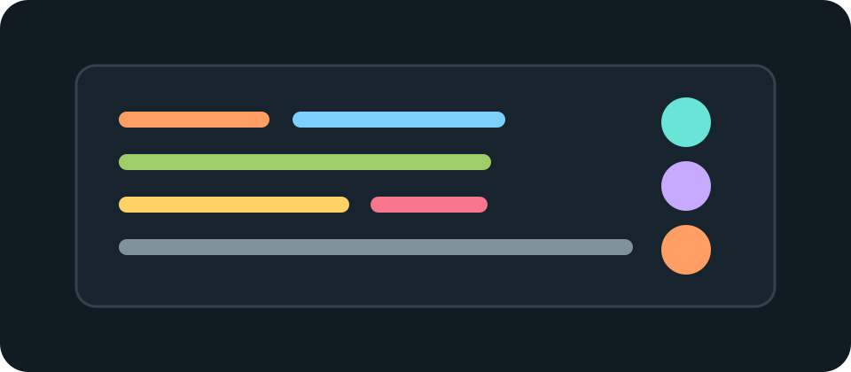

#CommonMark Complex Fixture
This fixture is intentionally dense. It should be useful as a parser and renderer smoke test, not as polished prose.
Inline basics include emphasis, strong emphasis, strong and emphasis,
inline code, and code with a ` backtick. Links include an inline
link, a full
reference, a collapsed reference, and a shortcut reference.
Images:

Autolinks: https://example.com/autolink and person@example.com. Entities: & < > " # A. Escapes: *literal asterisks*, [literal brackets], `literal backticks`, and \literal backslashes\. Inline HTML: raw span and Ctrl.
GFM table extension:
| Feature | Status | Notes |
|---|---|---|
| Tables | Working | gfm-table |
| Alignment | Centered | Right aligned |
| Escaped pipe | A | B | Inline a | b code |
GFM extension coverage:
- Render checked task list items.
- Render unchecked task list items with
obsolete wordingleft visible as deleted text. - Keep task item prose readable when it includes a literal link such as https://example.com/release-notes.
Literal autolinks include www.example.org and docs@example.org without angle brackets. A footnote reference should become an endnote.1
Wide table edge case:
| Test | What it verifies |
|---|---|
SyntheticReportRenderer_HandlesRidiculouslyLongIdentifierWithoutPageOverflow | VeryLongConfigurationFlagNameForLayoutTesting is present -> the table scrolls inside its container |
ExamplePipeline_FallsBackToReadableSummaryWhenTelemetryTokenIsMissing | No ImaginaryTelemetryToken, no DemoChecksumMarker -> the rendered document keeps its page width |
FictionalScenario_SkipsOptionalProbeWhenDemoFeatureSwitchIsDisabled | DemoFeatureSwitch=false, no PlaceholderProbeName -> inline code remains readable in a narrow viewport |
This line ends with a soft break
and continues in the same paragraph.
This line ends with a hard break
and this text follows the hard break.
#Setext Level One
#Setext Level Two
#ATX Heading With Closing Hashes
#Heading With code And Reference
####### Seven hashes are paragraph text, not a heading.
A simple block quote paragraph with inline emphasis and a link.
A nested block quote.
- Nested ordered item one.
- Nested ordered item two.
- Nested bullet inside the ordered item.
- Another nested bullet with
code.
- Bullet item inside a quote.
- Second bullet item inside a quote.
const quoted = "fenced code inside a block quote"; console.log(quoted);Lazy continuation text belongs to the previous block quote paragraph even though this source line has no quote marker.
Tight bullet one.
Tight bullet two with nested content.
- Nested ordered one.
- Nested ordered two.
- Deep bullet one.
- Deep bullet two.
Tight bullet three.
Loose ordered item one.
This second paragraph makes the list loose.
Loose ordered item two.
Child bullet paragraph.
Child continuation paragraph.
- Ordered list starting at nine.
- Ordered list continuing at ten.
Paragraph before an ordered-looking line. 2. This line should stay part of the paragraph if paragraph interruption rules are implemented exactly.
function indentedCode() {
return "four leading spaces";
}export function fencedCode(value: string): string {
return value.trim();
}public sealed class MarkdownRenderer
{
public string Render(string markdown)
{
Console.WriteLine("Rendering Markdown");
return markdown.Trim();
}
}<div class="from-fence">
Fenced HTML is code, not raw HTML.
</div>Raw HTML block content with HTML strong.
Paragraph after raw HTML should resume Markdown parsing with strong text.
-
Footnotes are rendered after the main content, with a back link to the reference. They can contain inline formatting and regular Markdown links such as the example site.